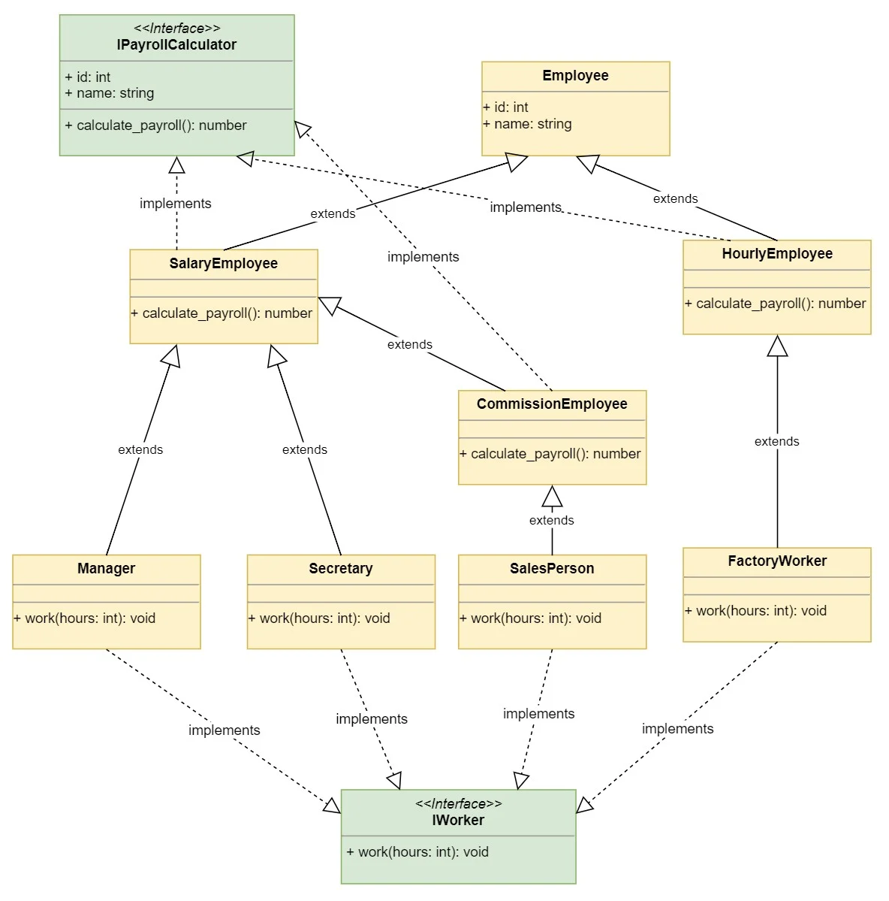

Composition in EK9
Composition has been outlined in the traits section in simple form. This section will discuss composition in more detail through an example. You may be thinking why labour this traits and composition stuff so much?
See the rationale and logic below as to why there is so much focus on this.
Composition background
In general when Object-Oriented programming first started to gain ground, the movement of defining data structures ('structs in C') and having functions manipulate those 'structs' fell out of use.
This was generally considered a good thing by Object-Oriented developers, now classes and class hierarchies became the main driving force. Initially the classes developed were relatively simple to understand. It was not long before very large and deep class hierarchies became common. In many cases with multiple inheritance adding to the complexity.
The main reason this 'new OOP' approach was consider a good thing is because it enabled data hiding and limited access
to state data (and specifically its mutation). EK9 has the pure mechanism that enables mutable
data structures to remain free of mutation. The most important part of the pure approach in
EK9 is that it works in a pragmatic way and does not focus on the data structure itself but on the processing.
So for example it is possible in EK9 to pass a set of nested data structures into a pure function
and that function can take a reference to some part of that data structure and use values in it (but not mutate it).
However, it is able possible for that same function to take a reference to some part of that same nested data structure, and 'return' an
object that references that part of the nested data structure. This then 'returned' object could then be used elsewhere in a 'non-pure'
function or method. Now the data value can be mutated if required.
With EK9 records and functions you can now use the old approach again; and it's not a
bad practice - it's a valid and powerful approach if you wish to adopt a functional development style.
The pure mechanism in EK9 now enables a more refined control to state data. It also removes the need for
endless and pointless 'getters' which seem to spread all of 'OOP' code bases.
Add into the mix the teaching of Object-Oriented programmers to model 'real life' concepts and the rot set in! Yes a Square 'is a' type of Rectangle mathematically, but that does not mean you can or should model it like that in a class structure.
Now throw in the convenience of just wanting some of the same functionality from another class and gaining that functionality through inheritance - and we have massive interdependence and coupling.
By providing protected fields/properties; even 'encapsulation' is lost.
With Java classes, things became slightly simpler because it did not support multiple inheritance and Java Interfaces only had abstract methods (originally). But again as inheritance was really the main mechanism developers focused on to augment and add functionality; hierarchies became quite deep.
You may consider the above statements incorrect, opinionated, invalid or extreme. These are opinions, but the EK9 language has been driven in part by experience of using 'C', Structs - going through the joy and pain of Object-Oriented programming.
So why isn't composition more widely used/promoted? It's probably because it has not been made easy enough. Imagine a trait/interface with 20 methods on it; implement a class and provide implementations for all 20 methods. Now imagine wanting to compose that class with another that implements the same trait/interface. You have to write 20 methods that just call delegate.{methodName}!
This is what EK9 does for you with the by ... syntax (see later example for details). What this means is that a developer can now create a class that has multiple traits but each of those traits (and all the methods) can be delegated to existing concrete classes that have already been developed. Additionally, if you do what to override a small selection of the methods; you can, and EK9 won't delegate those overridden methods.
Smaller and well-defined functionality
In general the smaller, well-defined and immutable a piece functionality is; the:
- more reliable it is
- easier it can be tested
- more reusable it is
- refactoring and improvement is simplified
The SOLID principle can be observed and can be followed through the use of composition more easily than just using inheritance.
By supporting delegation and multiple inheritance of traits; EK9 enables the developer to apply the 'I' - interface segregation principle with ease.
For example; you can define any number of traits; have a small number of classes that implement those traits. You can then create a trait that extends those traits and a concrete class that then delegates all or some of the implementation to the existing classes.
Functions
A function is probably the smallest and most reusable piece of functionality that could be developed; in general it has no state of its own. With the advent of Object-Oriented programming this very useful and reliable mechanism of development was discarded to some degree. Not so much with C++, but with Java to some extent (being sort of reintroduced in Java 8).
With EK9 the function is considered a critical, valuable, reliable, robust and scalable software construct. By employing function delegates; a mechanism of adjusting functionality of classes without sub-classing (inheritance) can be realised. This is shown in this example (see Square).
The only disadvantage of using function delegates like this, is that the function does not have direct access to the state of the object. Some developers would see this as an advantage rather than a disadvantage; as it respects encapsulated data and state.
If access to state data is required - then an approach is to model all the 'classes' state data in a record. Then if state data access is required in a function the record can be passed into the pure function. This provides direct (but immutable) access to the data. This does break the 'information hiding' aspect of the class however, this may or may not be worthwhile, and it is a matter of judgement.
Small Classes
There is a tendency for developers to create God classes. These have way too much functionality or manipulate other objects (as if they were C structs; though they go through the motions of Object-Orientation by just using 'getters'/'setters'). In general, they tend to be very large, link to many other classes or have very deep hierarchies.
Breaking these large classes up into much smaller classes, functions and records and then composing them together behind a class that delegates the call through to each of the smaller classes is a step in the right direction.
By creating smaller well-rounded and encapsulated classes; defects and complexity are reduced and reuse is increased. They can more easily follow the single responsibility principle.
Façade
The approach of breaking up a large class in to several smaller classes may still require some sort of unifying 'interface' to some degree (take care here not to build a very large 'interface'). In most modern languages an interface type would be defined with all (or most) the same methods on the classes re-declared. Furthermore the class that implements the interface must redeclare/implement those methods yet again and must also the call the method on the actual class it will use to provide that functionality.
EK9 has a solution to the above through the use of traits as shown in the example below. Specifically the 'Employee' using traits by delegating to a matching Property class.
Inheritance
There is a separate section on inheritance. Use of inheritance is still a key technique and useful mechanism. Inheritance to model concepts that are naturally structured, rather than inheritance just because there is similarity in data elements or processing is the most suitable approach to using inheritance.
As a short example; consider a class called ExternalAspect that has properties of colour and texture. Human, Bird and Chair all share those properties to some degree. But they are not 'an' ExternalAspect! They could have a property of ExternalAspect however. With real world examples this is sometimes quite obvious, but with more abstract software concepts this become blurred or confused at times.
But even with real world examples, it is not always appropriate to make class structures and inheritance follow those concepts too closely. This is sometimes a major source of confusion as there can be a conflict in true reality and what you need to model in software.
Contradictions
There are now some contradictions that must now be addressed.
- Large class hierarchies lead to complexity and lack of flexibility
- Breaking up classes into smaller implementations, creates many classes to be composed
- Façades can create duplication of method declarations and the interface/implementation duality
The EK9 Approach
We need the benefits of being able to create small well defined traits/classes and the benefits of the Façade. But we don't want the disadvantages of either (again don't make the Façade too large).
Function delegates provide the first part of the solution.
Traits provide the second part. The trait provides a simple well-defined public interface that can support default functionality and abstract method signatures.
The third part of the solution is to enable multiple inheritance of traits. Façades can now be defined just by creating a new trait that has traits of all the features needed.
The fourth and final part of the solution is to incorporate class/object delegation; so that when defining a class; repetition is reduced and calls each and every method that require delegation are automatically undertaken by EK9. But importantly if you do wish to provide a new implementation you can.
See the example below, specifically:
Employee with trait of IRole by role, IPayrollCalculator by payroll
Employee implements two traits IRole/IPayrollCalculator. But it immediately delegates the implementation to role and payroll field/property objects.
Example
The use of composition is really a design pattern that can be used with any language. The diagrams below are from a Python example, which was originally taken from a book on C++ design. The site is quite long (but well detailed and interesting). The main points of contrast are shown in two diagrams, one for inheritance and one for composition.
The design has remained fairly unaltered in the EK9 implementation, just a few alterations here and there. While the final design might not be perfect or what some OO designers would like, it does provide a good example of the issues and proposes a solution that could be used or refined and improved further.
Inheritance
As you can see the inheritance design is quite complex and has multiple inheritance.
Composition
The composition design is simpler and focuses on composition around the employee. It might have been more appropriate to model 'Employment', 'Employee' and 'Person' rather than just use 'Employee'; but that is a modelling discussion rather than the focus of this; which is composition.
Composition as above in EK9
The following example is quite long, this is to ensure that the benefits of the EK9 approach to composition can be seen.
The same names for the constructs have been used in the EK9 code example below. This makes the mapping between the composition diagram above and the EK9 code more obvious. Method names have been altered and there is a slight change in the inheritance structure (which is more logical). In all; it is about 250 lines of code. The implementation is broadly the same as the Python code, There are several alternatives to the implementation in EK9 (such as using text constructs or components). These have not been done to keep the example a similar to the Python and the point of using composition.
Composition Example
#!ek9
defines module introduction
defines trait
IRole
performDuties()
-> hours as Integer
<- activity as String?
IPayrollCalculator
trackWork()
-> hours as Integer
calculatePayroll()
<- amount as Money?
defines record
//Added support for type inference back in for fields/properties
//but only is default constructor or a literal
Address
street <- String()
street2 <- String()
city <- String()
state <- String()
zipcode <- String()
//Might allow default with matching number type and name of parameters.
Address()
->
street as String
street2 as String
city as String
state as String
zipcode as String
this.street :=: street
this.street2 :=: street2
this.city :=: city
this.state :=: state
this.zipcode :=: zipcode
operator ? as pure
<- rtn as Boolean: street? and city? and state? and zipcode?
operator $ as pure
<- rtn as String: String()
rtn: String(street)
if street2?
rtn += "\n" + street2
rtn += "\n" + city + " " + state+ " " + zipcode
defines class
Employee with trait of IRole by role, IPayrollCalculator by payroll
id <- Integer()
name <- String()
address <- Address()
role as IRole?
payroll as IPayrollCalculator?
//You can make a default constructor unavailable if you wish
default private Employee()
//No body
//You could just use
//default Employee() + the paramaters and the ek9 compiler would do that implementation for you.
Employee()
->
id as Integer
name as String
address as Address
role as IRole
payroll as IPayrollCalculator
this.id: id
this.name: name
this.address: address
this.role: role
this.payroll: payroll
work()
-> hours as Integer
stdout <- Stdout()
duties <- performDuties(hours)
stdout.println(`Employee ${this}:`)
stdout.println(` - ${duties}\n`)
payroll.trackWork(hours)
address()
<- rtn as Address: address
operator $ as pure
<- rtn as String: $id + " - " + name
AddressBook
employeeAddresses as Dict of (Integer, Address): {
1: Address("121 Admin Rd.", String(), "Concord", "NH", "03301"),
2: Address("67 Paperwork Ave", String(), "Manchester", "NH", "03101"),
3: Address("15 Rose St", "Apt. B-1", "Concord", "NH", "03301"),
4: Address("39 Sole St.", String(), "Concord", "NH", "03301"),
5: Address("99 Mountain Rd.", String(), "Concord", "NH", "03301")
}
getEmployeeAddress()
-> employeeId as Integer
<- rtn as Address: Address()
address <- employeeAddresses.get(employeeId)
assert address?
rtn: address.get()
ProductivitySystem
roles as Dict of (String, IRole): {
"manager": ManagerRole(),
"secretary": SecretaryRole(),
"sales": SalesRole(),
"factory": FactoryRole()
}
getRole()
-> roleId as String
<- rtn as IRole?
theRole <- roles.get(roleId)
assert theRole?
rtn: theRole.get()
track()
->
employees as List of Employee
hours as Integer
stdout <- Stdout()
stdout.println("Tracking Employee Productivity")
stdout.println("==============================")
for employee in employees
employee.work(hours)
stdout.print("\n")
// Employee roles
ManagerRole with trait of IRole
override performDuties()
-> hours as Integer
<- activity as String: `screams and yells for ${hours} hours.`
SecretaryRole with trait of IRole
override performDuties()
-> hours as Integer
<- activity as String: `does paperwork for ${hours} hours.`
SalesRole with trait of IRole
override performDuties()
-> hours as Integer
<- activity as String: `expends ${hours} hours on the phone.`
FactoryRole with trait of IRole
override performDuties()
-> hours as Integer
<- activity as String: `manufactures gadgets for ${hours} hours.`
//Payroll classes
PayrollSystem
employeePolicies as Dict of (Integer, PayrollPolicy): {
1: SalaryPolicy(3000#USD),
2: SalaryPolicy(1500#USD),
3: CommissionPolicy(1000#USD, 100#USD),
4: HourlyPolicy(15#USD),
5: HourlyPolicy(9#USD)
}
getPolicy()
-> employeeId as Integer
<- rtn as PayrollPolicy?
policy <- employeePolicies.get(employeeId)
assert policy?
rtn: policy.get()
calculatePayroll()
-> employees as List of Employee
stdout <- Stdout()
stdout.println("Calculating Payroll")
stdout.println("===================")
for employee in employees
stdout.println(`Payroll for: ${employee}`)
stdout.println(`- Check amount: ${employee.calculatePayroll()}`)
if employee.address()?
stdout.println(`- Sent to:\n${employee.address()}`)
stdout.print("\n")
PayrollPolicy with trait of IPayrollCalculator as abstract
hoursWorked as Integer: 0
override trackWork()
-> hours as Integer
hoursWorked += hours
hoursWorked()
<- hours as Integer: hoursWorked
HourlyPolicy extends PayrollPolicy
hourRate as Money: Money()
HourlyPolicy()
-> hourRate as Money
this.hourRate = hourRate
override calculatePayroll()
<- amount as Money: hourRate * hoursWorked()
SalaryPolicy extends PayrollPolicy as open
weeklySalary as Money: Money()
SalaryPolicy()
-> weeklySalary as Money
this.weeklySalary = weeklySalary
override calculatePayroll()
<- amount as Money: weeklySalary
CommissionPolicy extends SalaryPolicy
commissionPerSale as Money: Money()
CommissionPolicy()
->
weeklySalary as Money
commissionPerSale as Money
super(weeklySalary)
this.commissionPerSale = commissionPerSale
override calculatePayroll()
<- amount as Money: super.calculatePayroll()
amount += commission()
private commission()
<- amount as Money: commissionPerSale/5.0 * hoursWorked()
// Part of the driver to create the employees
EmployeeDatabase
productivitySystem as ProductivitySystem: ProductivitySystem()
payrollSystem as PayrollSystem: PayrollSystem()
addresses as AddressBook: AddressBook()
employees()
<- rtn as List of Employee: List()
//You can use named variable if you prefer
rtn += createEmployee(id: 1, name: "Mary Poppins", theRole: "manager")
rtn += createEmployee(2, "John Smith", "secretary")
rtn += createEmployee(3, "Kevin Bacon", "sales")
rtn += createEmployee(4, "Jane Doe", "factory")
rtn += createEmployee(5, "Robin Williams", "secretary")
private createEmployee()
->
id as Integer
name as String
theRole as String
<- //a bit of a mouth full, but you can use named parameters like this if you wish.
rtn as Employee: Employee(
id: id,
name: name,
address: addresses.getEmployeeAddress(id),
role: productivitySystem.getRole(theRole),
payroll: payrollSystem.getPolicy(id)
)
defines program
Demonstration()
productivitySystem <- ProductivitySystem()
payrollSystem <- PayrollSystem()
employeeDatabase <- EmployeeDatabase()
employees <- employeeDatabase.employees()
productivitySystem.track(employees, 40)
payrollSystem.calculatePayroll(employees)
//EOF
The driver components
The 'Demonstration' program, 'EmployeeDatabase', 'ProductivitySystem' and 'PayrollSystem' classes are really just artefacts that are needed to demonstrate how the solution works. The output is shown below (the same as the Python example - except Money is used and so you see the currency).
The Output
Tracking Employee Productivity
==============================
Employee 1 - Mary Poppins:
- screams and yells for 40 hours.
Employee 2 - John Smith:
- does paperwork for 40 hours.
Employee 3 - Kevin Bacon:
- expends 40 hours on the phone.
Employee 4 - Jane Doe:
- manufactures gadgets for 40 hours.
Employee 5 - Robin Williams:
- does paperwork for 40 hours.
Calculating Payroll
===================
Payroll for: 1 - Mary Poppins
- Check amount: 3000.00#USD
- Sent to:
121 Admin Rd.
Concord NH 03301
Payroll for: 2 - John Smith
- Check amount: 1500.00#USD
- Sent to:
67 Paperwork Ave
Manchester NH 03101
Payroll for: 3 - Kevin Bacon
- Check amount: 1800.00#USD
- Sent to:
15 Rose St
Apt. B-1
Concord NH 03301
Payroll for: 4 - Jane Doe
- Check amount: 600.00#USD
- Sent to:
39 Sole St.
Concord NH 03301
Payroll for: 5 - Robin Williams
- Check amount: 360.00#USD
- Sent to:
99 Mountain Rd.
Concord NH 03301
Summary
The key points for this example are:
- The trait concept in EK9 facilitates composition
- It is necessary to actually define the traits
- The abstraction and structure has to be explicit in EK9
- Constructs record, trait and class provide different structure constructs
- 'Employee' methods calculatePayroll and performDuties are automatically delegated
The automatic delegation of methods on 'Employee' mean that the methods do not need implementing.
While the main purpose of this example is not to compare the EK9 language to Python, it is quite clear that EK9 has been inspired by Python in terms of layout and syntax. But also inspired by Java/C#/Scala and C++ in terms of structure and explicit extension/implementation. It's not enough just to define method signatures that match up, an actual trait must be declared and used. This is a good thing; as it is explicit and type safe (it is not possible to pass the wrong type of object just because the method signatures match!).
SOLID
The SOLID principle as been observed quite well in the example.
- Single Responsibility - Each Role is isolated, each PayrollPolicy is isolated
- Open-closed principle - clearly the behaviour in roles and payroll policies can change but modification to their bases is not needed
- Liskov substitution principle - Any of the roles and payroll policies can be replaced without altering the correctness of the program
- Interface segregation principle - IRole and IPayrollCalculator are separate interfaces/traits and so are segregated
- Dependency inversion principle - The Employee class is only aware of IRole and IPayrollCalculator; at construction it is given the implementation it is to use.
Advantages
Should alterations to any of the implementations referenced above be needed, only a small part of the code would need to be adjusted. The effects of such changes are quite direct and obvious. In short; it is obvious where to look to alter 'manager' pay or 'secretary' activity text.
Changes to addresses would be done in the 'Address Book'.
Issues
Output is hardwired to 'Stdout', What about adding new employees? Altering an existing employee job role, adding a new job role? This solution does not address these functions. But more importantly it does not facilitate the development of such functions. It's not obvious where or how they could be implemented.
There are also a couple of issues in the code around 'ProductivitySystem'. The 'EmployeeDatabase' is directly coupled to 'ProductivitySystem'. It is also directly coupled to 'PayrollSystem' and 'AddressBook'!
The 'ProductivitySystem' seems to have mixed responsibilities. Is it just for tracking productivity; or is it also some type of HR system that is to be used for defining what roles should be available for a notional title? This is very confused and should really be separated out from the 'ProductivitySystem'.
The 'AddressBook' is only used by the 'EmployeeDatabase', which is fine in of itself. But this means that it cannot be easily swapped out for some type of database or file or remote service. The 'EmployeeDatabase' is directly linked to this implementation of the 'AddressBook'.
This page has now moved into the realm of software design, rather than just the EK9 language. But will be used as an example of how to use other EK9 language features to address the above issues.
The intention here is not to criticize the example from the website (thank you, Isaac Rodriguez for taking the time to produce such a good example), but really to show how the EK9 language features can be used in different ways. In fact most of the issues raised here were not really the main subject of the website, but are really the 'Driver' infrastructure.
Revisiting
The example above will be revisited in the Components section, where it will be refined further. Then in the section on dependency injection more alterations and alternatives will be discussed.
Next Steps
The use of inheritance is covered in the next section. Components will also be of interest; as they too enable composition, but into larger building blocks.